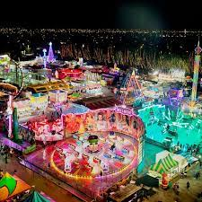

ITINERARIO
En este apartado de la pagina se encontra el horario donde se explicara el lugar que se haran las actividades,con sus horarios indicados y tambien se explicara las horas libres que tendra el alumnado durante el viaje
Dia 1
El primer dia los alumnos y los profesores seran convocados en el aeropuerto a las 7:15 para poder ir tranquilos por el aueropuerto a las 9: 15 sale el vuelo hacia madrid y llegamos aproximadamente a las 10:40 y el vuelo de madrid hacia miami saldra a las 11:30 y llegara a Miami aproximadamente a las 15:30, a continuacion el bus nos pasaria a recoger sobre las 16:00 y nos llevara directamente al hotel Baymont, a las 16:30 llegaremos al hotel y se empezara a hacer el checkin y se enviara a cada alumno a su habitacion donde dejaran las maletas y se preparan para el resto del dia.Donde tendran hora libre hasta las 22:00, donde nos encontraremos en un punto concreto y volveremos al hotel todos juntos.
Dia 2
El segundo dia los alumnos y los profesores se levantaran a las 8 para vestirse y bajar a las 8:30 al restaurante a desayunar, a las 9:00 se desalojara el restaurante y los alumnos y profesorado se arreglaran para ir a hacer la primera excursion del viaje. El autobus les recogera en el punto de queda a las 10:00 donde seguidamente les llevara al destino, la excursion empezara a 10:30 y tendra una duracion de 3 horas aproximadamente donde seguidamente iremos a comer al restaurante grail miami a comer hamburguesas. Despues de la comida se dejara alumnado hora libre hasta las 21:30 donde nos veremos para volver al hotel todos juntos y a las 22:00 los alumno se tendran que ir a la cama.
Dia 3
El tercer dia los alumnos y los profesores se levantaran a las 7 para vestirse y bajar a las 7:15 al restaurante a desayunar, a las 7:45 se desalojara el restaurante y los alumnos y profesorado se prepararan para hacer una excursion en kayak. La salida del autobus sera de las 8:00 y llegaremos aproximadamente sobre las 8:45 y la actividad empezara a las 9:30 y se tendra que pagar 110$ cada persona que quiera participar. La actividad finalizara a las 14:00 y se dejara al alumnado hora libre hasta las 21:30 donde nos veremos para volver al hotel todos juntos y a las 22:00 los alumno se tendran que ir a la cama.
Dia 4
El cuarto dia nos podremos levantar mas tarde aproximadamente sobre las 8:30 y desayunaremos a las 9:00 ya que sera un dia mas tranquilo y tendremos mucho mas tiempo libre. A las 10:00 saldremos del hotel para ir a pasear por la ciudad de miami y llegara aproximadamente a las 14:00 al restaurante Pummarola Midtown donde podran comer gran variedad de alimentos. Cuando los alumnos hayan acabado de comer volveremos al hotel de paseo y sobre las 20:00 saldremos del hotel para ir a cenar. Y nos veremos en el punto de quedada a las 22:00 y volveremos al hotel para irnos a la cama.
Dia 5
El quinto dia los alumnos y los profesores se levantaran a las 7 para vestirse y bajar a las 7:15 al restaurante a desayunar, a las 7:45 se desalojara el restaurante y los alumnos y profesorado se prepararan para hacer una excursion en kayak. La salida del autobus sera de las 8:00 y llegaremos aproximadamente sobre las 8:15 y la actividad tendra una duracion aproximada de 2 horas y a las 11:00 pasara el bus para llevarnos de vuelta al hotel empezar a hacer la maleta y arreglarse para ir por la tarde al siguiente hotel a hacer el checking, a las 13:00 saldremos a comer hasta las 15:30 donde volveremos al hotel a recoger las maletas y nos iremos al hotel Fontainebleau Miami Beach ha hacer el checking y dejaremos las maletas cada uno en su habitacion y nos iremos a cenar hasta las 22:00 y despues cada persona a su habitacion y a dormir.
Dia 6
El sexto dia nos levantaremos a las 8:00 para bajar a desayunar todos juntos a las 8:15, a las 9:00 subiremos a la habitacion a prepar nuestras cosas para dar un paseo por la ciudad y hacer la actividad de experiencia gastronomica de las 12:30 hasta las 2:30 y para despues ir a la heladeria Gelato-go Ocean Drive a probar una gran variedad de helados, al finalizar esta excursion los alumnos tendran tiempo libre para ir a cenar y sobre las 21:30 tendran que volver al punto de queda para volver al hotel y irse a dormir para el dia siguiente.
Dia 7
En el septimo dia nos levantaremos a las 8:30 para ir a desayunar a las 9 hasta las 9:30 que tendremos que subir hasta nuestras habitaciones para cambiarnos, donde a las 10:30 pasara el bus a recogernos y nos llevara hasta el museo que vamos a visitar y la excursion empezara a las 11:20 y esta prevista que dure hasta las 13:00, cuando acabe la excursion por el museo los alumnos tendras hora libre hasta las 9:30 donde nos encontraremos con ellos y volveremos al hotel en bus y la hora de llegada esta prevista que sea a las 22:00 y todo el mundo tendra que ir a sus habitaciones a dormir
Dia 8
En el octavo dia nos levantaremos a las 7:30 para ir a desayunar a las 8:00, a las 8:30 despejaremos el restaurante para ir a vestirnos y ir a pasar el dia en el centro recreatvio xtreme action part, la salida del bus hacia e centro recreativo sera a las 9:15 y llegaremos al parque a las 10:00. Entraremos al parque a las 10:30 y los alumnos tendran hasta las 18:00 para disfrutar del centro recreativo donde alli dentro podran comer etc. A las 6:30 el bus pasara a por nosotros y nos dejara cerca del hotel para poder irnos a cenar hasta las 21:30 donde nos volveremos a encontrar y nos iremos al hotel a dormir.
Dia 9
En el noveno dia se levantaran a las 8 para vestirse y bajar a las 8:30 al restaurante a desayunar, a las 9:00 se desalojara el restaurante. Antes de salir del hotel los alumnos haran sus maletas para la mañana siguiente ir al aeropuerto. Cuando los alumnos hayan acabado de hacer las maletas, les dejaremos libre todo el dia para que puedan ir a comprar o hacer actividades quedaremos con ellos a las 21:00 y nos iremos a las habitaciones a las 21:30 para descansar para el dia siguiente ya que nos tendremos que despertar pronto para coger el vuelo.
Dia 10
Nos levantaremos a las 7:30 para desalojar las habitaciones y a las 8:00 irnos a desayunar a las 8:30 acabaremos y nos veremos con el bus a las 8:45 para ir al aeropuerto donde llegaremos aproximadamente a las 9:00 y a las 11:30 sale el avion hace madrid y llegaremos a las 22:00 y tendremos que coger el vuelo madrid mallorca a las 23:30 y llegara aproximadamente a las 00:15 y quedaremos con todos los padres a las 00:30 para recoger al alumnado.
Aqui unas imagenes de donde iremos en el viaje.
